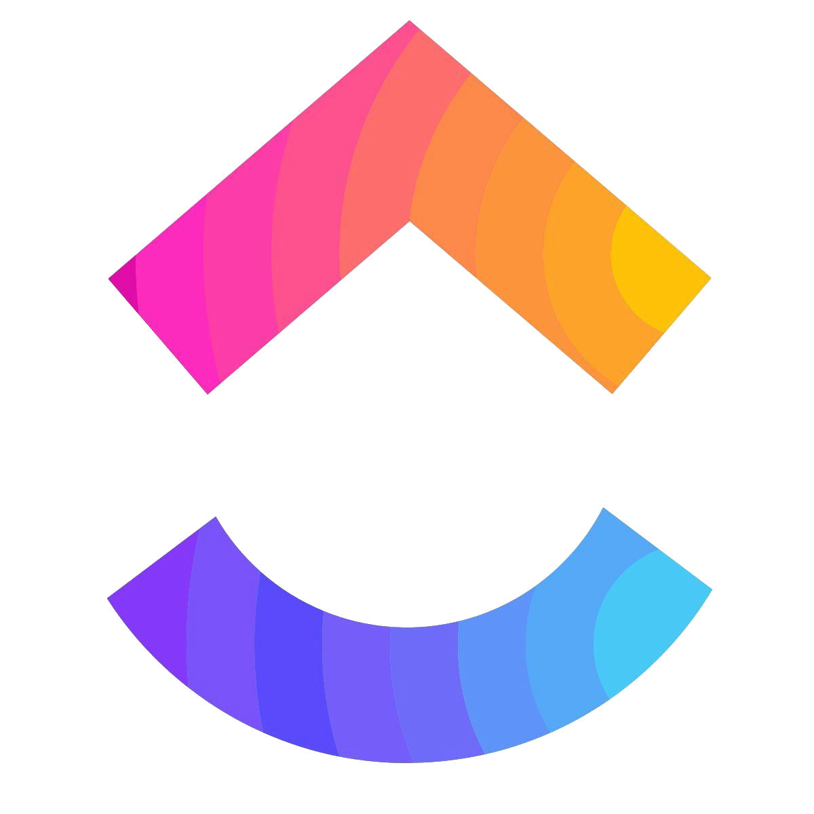
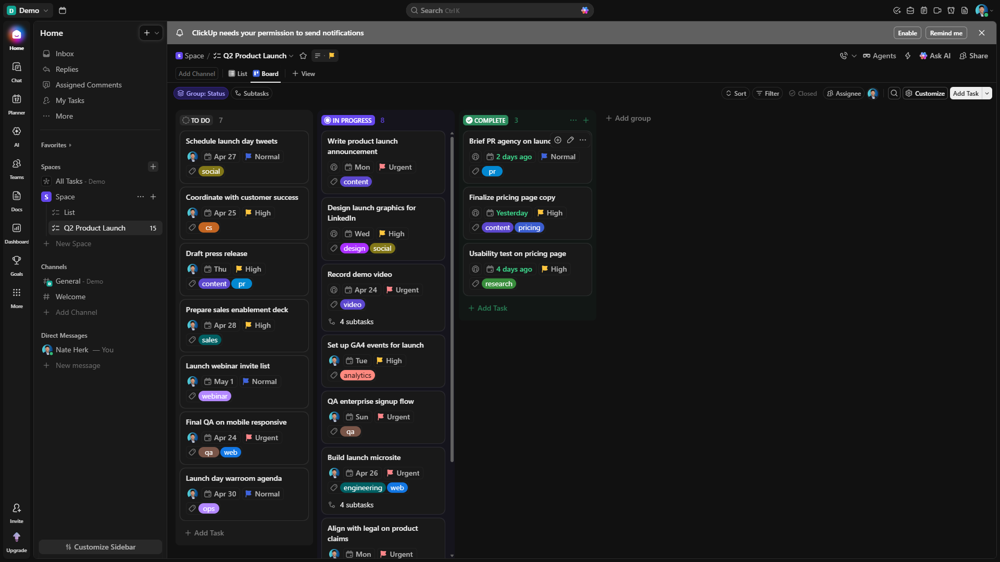
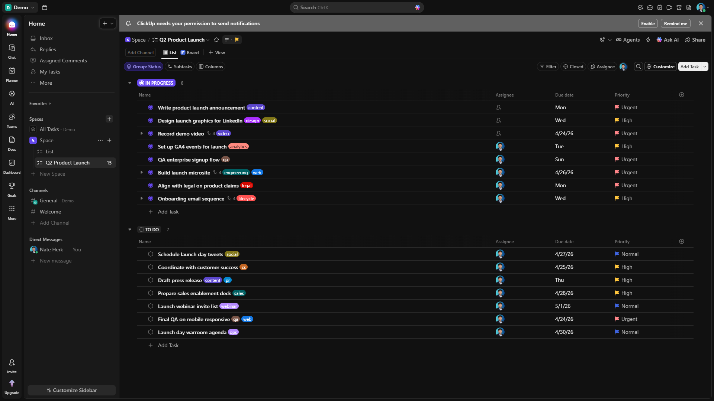
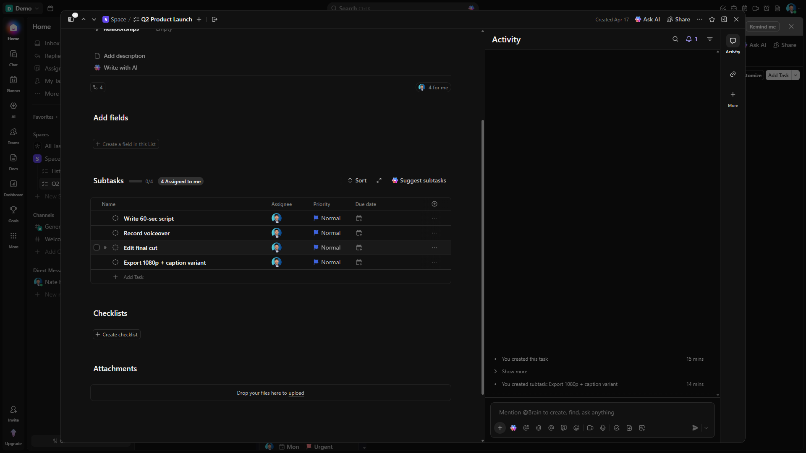

Slack
Sheets
Jira
Asana
Drive
Linear
Notion
GitHub
Zoom
Figma
Loom
Trello

ClickUp



SUBTASKS
COMMENT IN ACTIVITY
Deliver on time,
every time.
BUILT FOR TEAMS THAT SHIP.
ClickUp
Try it free
→
clickup.com
Every team juggles
12+ tools.
Work slows down.
One platform.
One workspace.
Every view.
Switch without losing context.
Every task,
complete context.
Comments. Subtasks.
All in one view.
Ask in
plain English.
Answers in
seconds.
CLICKUP // PRODUCT DEMO
·
00:00